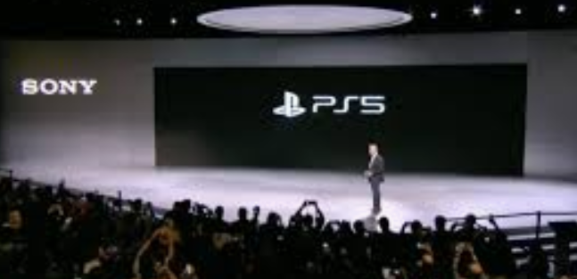

The Past
The original PlayStation console shipped in 1994 and sold over 100 million units in under a decade.
PlayStation 2 was released in 2000. The PlayStation 2 is the best-selling home console to date and reached over 155 million units sold by the end of 2012.Sony's next console. PlayStation 3, was released in 2006 and sold over 87.4 million units by March 2017.
Sony's PlayStation 4, was released in 2013, selling a million units within a day, becoming the fastest selling console in history.

|
PlayStations are Better?
The Playstation 4 (PS4) offers incredible graphics and offers Remote Play and an incredible controller which is 40% smaller than the Xbox360 offering a
much easier playing experience.
Playstation 4 has 2,400+ games that run on it. Any genre you seek you will find.
Sony also offers a streaming game option via their internet based subscription service offering.
|
|
The Future
Sony is planning to release the next generation of Playstation 5 at the end of 2020.
Sony has quietly launched the PS5's official website PS5's official website ahead of the next-gen console's release in late 2020.|  |